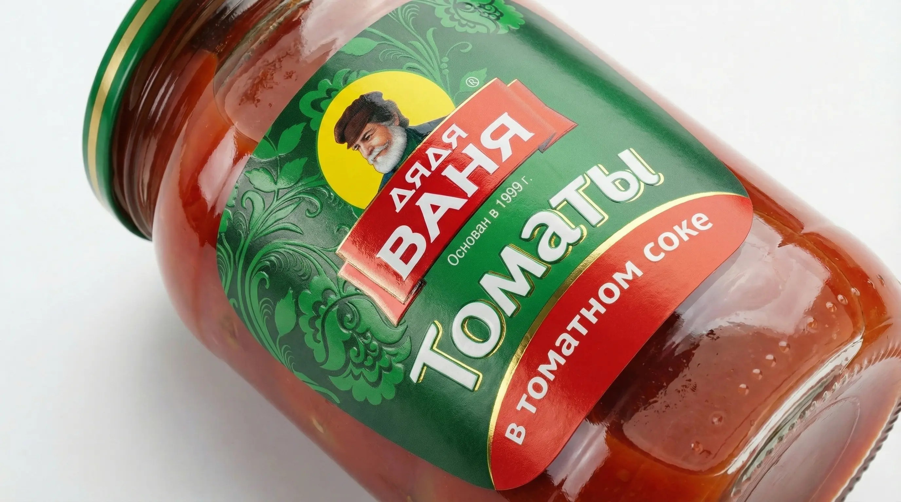

Возможности производства
Соответствуем строгим стандартам качества и безопасности
Особенности для пищепрома:
Специфика пищевой этикетки — это сложная логистика: от обледенения в холодильниках до нагрева в СВЧ печах.
- Устойчивость к конденсату: При перемещении из холодильника в тепло бумажные этикетки размокают. Мы подберем полимерные материалы, решающие эту проблему.
- Читаемость микрошрифта: Пищевые ГОСТы требуют указания полного состава, БЖУ и КБЖУ. Мы гарантируем высокую резкость мелких шрифтов.
- Термочеки и Весы: Производим термоэтикетки (ТОП и ЭКО) для весовых линий, колбас, сыров и мясной нарезки.
- Интеграция "Честный ЗНАК": Полностью отработан процесс маркировки для молочной продукции, бутилированной воды и консервов.

Чек-лист (PDF)
7 критических ошибок при заказе этикеток для пищевой продукции
Скачайте бесплатный PDF-файл, который убережет вас от слива бюджета. Узнайте, как избежать отклеивания в морозилке, проблем с жирными следами и штрафов Роспотребнадзора за нечитаемый состав.
✓ Чек-лист успешно отправлен на вашу почту!
Частые вопросы
Отвечают технологи Типографии РОСТ
Отклеится ли этикетка в морозильной камере?
Нет. Для замороженных полуфабрикатов, пельменей и мороженого мы используем специальные морозостойкие клеи (Hot-melt), которые сохраняют отличную адгезию при температуре до -40°C.
Безопасна ли ваша печать для продуктов питания?
Абсолютно. На производстве применяются специальные УФ-краски низкой миграции (Low Migration), которые официально допущены к печати упаковки с непрямым контактом с пищей.
Выцветает ли этикетка на солнце или при нагреве в СВЧ?
При правильном подборе материалов (например, полипропилен с термостойким лаком) этикетка выдержит как охлаждение, так и нагрев в микроволновой печи без потери цвета и деформации.
Печатаете ли вы коды маркировки "Честный ЗНАК" для пищевки?
Да, мы официально интегрируем коды Data Matrix для молочной индустрии, бутилированной воды и консервов с гарантией 100% считываемости на кассе.